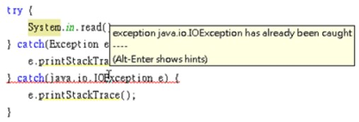

try/catch 例外處理
June 15, 2022來看一個簡單的程式，使用者可以連續輸入整數，最後輸入0結束後會顯示輸入數的平均值：
package cc.openhome;
import java.util.Scanner;
public class Average {
public static void main(String[] args) {
var scanner = new Scanner(System.in);
var sum = 0.0;
var count = 0;
while(true) {
var number = scanner.nextInt();
if(number == 0) {
break;
}
sum += number;
count++;
}
System.out.printf("平均 %.2f%n", sum / count);
}
}
如果使用者正確地輸入每個整數，程式會如預期地顯示平均：
10 20 30 40 0
平均 25.00
使用 try/catch
如果使用者不小心輸入錯誤，那就會出現奇怪的訊息，例如第三個數輸入為 3o，而不是 30 了：
10 20 3o 40 0
Exception in thread "main" java.util.InputMismatchException
at java.util.Scanner.throwFor(Scanner.java:909)
at java.util.Scanner.next(Scanner.java:1530)
at java.util.Scanner.nextInt(Scanner.java:2160)
at java.util.Scanner.nextInt(Scanner.java:2119)
at cc.openhome.Average.main(Average.java:11)
Java Result: 1
這段錯誤訊息對除錯是很有價值的，不過先看到錯誤訊息的第一行：
Exception in thread "main" java.util.InputMismatchException
Scanner 物件的 nextInt 方法，可以將使用者輸入的下一個字串剖析為 int 值，如果出現 InputMismatchException 錯誤訊息，表示不符合 Scanner 物件預期，因為 Scanner 物件預期下一個字串本身要代表數字。
Java 所有錯誤都會被包裹為物件，如果你願意，可以嘗試（try）捕捉（catch）代表錯誤的物件後作一些處理。例如：
package cc.openhome;
import java.util.*;
public class Average2 {
public static void main(String[] args) {
try {
var scanner = new Scanner(System.in);
var sum = 0.0;
var count = 0;
while (true) {
var number = scanner.nextInt();
if (number == 0) {
break;
}
sum += number;
count++;
}
System.out.printf("平均 %.2f%n", sum / count);
} catch (InputMismatchException ex) {
System.out.println("必須輸入整數");
}
}
}
這邊使用了 try、catch 語法，JVM 會嘗試執行 try 區塊的程式碼，如果發生錯誤，執行流程會跳離錯誤發生點，然後比對 catch 括號中宣告的型態，是否符合被拋出的錯誤物件型態，如果是的話，就執行 catch 區塊的程式碼。
一個執行無誤的範例如下所示：
10 20 30 40 0
平均 25.00
範例中如果 nextInt 發生 InputMismatchException，流程就會跳到型態宣告為 InputMismatchException 的 catch 區塊，執行完 catch 區塊後，之後沒有其它程式碼了，所以程式就結束了。一個執行時輸入有誤的範例如下所示：
10 20 3o 40 0
必須輸入整數
這個範例示範了如何運用 try、catch，在錯誤發生時顯示更友善錯誤訊息。有時錯誤可以在捕捉處理之後，嘗試回復程式正常執行流程。例如：
package cc.openhome;
import java.util.*;
public class Average3 {
public static void main(String[] args) {
var scanner = new Scanner(System.in);
var sum = 0.0;
int count = 0;
while (true) {
try {
var number = scanner.nextInt();
if (number == 0) {
break;
}
sum += number;
count++;
} catch (InputMismatchException ex) {
System.out.printf("略過非整數輸入：%s%n", scanner.next());
}
}
System.out.printf("平均 %.2f%n", sum / count);
}
}
如果 nextInt 發生了 InputMismatchException 錯誤，執行流程就會跳到 catch 區塊，執行完 catch 區塊之後，由於還在 while 迴圈中，還可繼續下一個迴圈流程。
一個輸入錯誤時的結果示範如下，對於正確的整數輸入予以加總，對於錯誤的輸入則顯示略過，最後顯示平均值：
10 20 3o 40 0
略過非整數輸入：3o
平均 23.33
例外繼承架構
不過就 Java 在例外處理的設計上，並不鼓勵捕捉 InputMismatchException 並重新恢復執行流程，這跟例外繼承架構有關。
例如，Average 範例中，雖然沒有撰寫 try、catch 語句，照樣可以編譯執行，Java 初學者往往不理解的是，如果如下撰寫，編譯卻會錯誤？
單純就語法上想解決這個錯誤訊息有兩種方式，一是使用 try、catch 包裹 System.in.read，二是在 main 方法旁宣告 throws java.io.IOException。
簡單來說，API 設計者在 System.in.read 的實作中，某些條件成立時會引發錯誤，而且認為呼叫 System.in.read 方法的客戶端有能力處理錯誤，要求編譯器提醒客戶端必須明確處理錯誤，不然不可通過編譯。例如，若如下撰寫就可以通過編譯：
try {
int ch = System.in.read();
System.out.println(ch);
} catch(java.io.IOException ex) {
ex.printStackTrace() ;
}
Average 範例與這邊的例子，程式都有可能發生錯誤，為什麼編譯器單單就只要求這邊的範例，一定要處理錯誤呢？要瞭解這個問題，得先瞭解那些錯誤物件的繼承架構：
首先要瞭解錯誤會被包裝為物件，這些物件都是可拋出的（稍後會介紹 throw 語法，就會瞭解如何拋出錯誤物件），因此可拋出的物件都繼承自 java.lang.Throwable 類別，並可使用 try、catch 進行捕捉，Throwable 定義了取得訊息、堆疊追蹤（Stack Trace）等方法，它有兩個子類別：java.lang.Error 與 java.lang.Exception。
Error 與其子類別實例代表嚴重系統錯誤，例如硬體層面錯誤、JVM錯誤或記憶體不足等問題。雖然也可以使用 try、catch 來處理 Error 物件，但並不建議，發生嚴重系統錯誤時，Java 應用程式本身是無力回復的。舉例來說，若 JVM 所需記憶體不足，如何撰寫程式要求作業系統給予 JVM 更多記憶體呢？Error 物件拋出時，基本上不用處理，任其傳播至 JVM 為止，或者是最多留下日誌訊息，供開發者除錯時作為修正程式時的線索。
如果拋出了 Throwable 物件，而程式中沒有任何 catch 捕捉到物件，最後由 JVM 捕捉到的話，那 JVM 基本處理就是顯示錯誤物件包裹之訊息並中斷程式。
程式設計本身的錯誤，建議使用 Exception 或其子類別實例來表現，單就語法與繼承架構上來說，如果某個方法宣告會拋出Throwable、Exception 或子類別實例，但又不屬於 Error 或 java.lang.RuntimeException 或其子類別實例，你就必須明確使用 try、catch 語法加以處理，或者在方法用 throws 宣告這個方法會拋出例外，否則會編譯失敗。
例如，先前呼叫 System.in.read 時，in 其實是 System 的靜態成員，其型態為 java.io.InputStream，如果你查詢 API 文件，可以看到 InputStream 的 read 方法被 API 設計者宣告為：
IOException 是 Exception 的直接子類別，所以編譯器要求你明確使用語法加以處理。Exception 或其子物件，但非屬於RuntimeException 或其子物件，稱為受檢例外（Checked Exception），受誰檢查？受編譯器檢查！受檢例外存在之目的，在於API設計者實作某方法時，某些條件成立時會引發錯誤，而且認為呼叫方法的客戶端有能力處理錯誤，要求編譯器提醒客戶端必須明確處理錯誤，不然不可通過編譯，API 客戶端無權選擇要不要處理。
屬於 RuntimeException 衍生出來的類別實例，代表 API 設計者實作某方法時，某些條件成立時會引發錯誤，而且認為 API 客戶端應該在呼叫方法前做好檢查，以避免引發錯誤，之所以命名為執行時期例外，是因為編譯器不會強迫一定得在語法上加以處理，亦稱為非受檢例外（Unchecked Exception）。
例如使用陣列時，若存取超出索引就會拋出 ArrayIndexOutOfBoundsException，但編譯器並沒有強迫你在語法上加以處理，這是因為 ArrayIndexOutOfBoundsException 是一種 RuntimeException，可以在 API 文件的開頭找到繼承架構圖：
在 Average 範例中，因為 InputMismatchException 設計為一種 RuntimeException：
因此即使實際上還是有可能引發例外，但編譯器並不強迫你得處理例外，你有權利選擇是否使用 try、catch 處理，Java 對於 RuntimeException 的態度是，這是一種臭蟲，也就是呼叫方法前沒有做好前置檢查，應該予以修正，使得呼叫方法時不會引發錯誤，如果真要以 try、catch 處理，建議是日誌或呈現友善訊息，像是使用 try、catch 的 Average2 的作法就是個例子。
雖然有些小題大作，不過 使用 try、catch 的 Average3 若要避免出現 InputMismatchException，應該是取得使用者的字串輸入之後，檢查是否為數字格式，若是再轉換為 int 整數，若否則提醒使用者做正確格式輸入，例如：
package cc.openhome;
import java.util.Scanner;
public class Average4 {
public static void main(String[] args) {
var sum = 0.0;
var count = 0;
while(true) {
var number = nextInt();
if(number == 0) {
break;
}
sum += number;
count++;
}
System.out.printf("平均 %.2f%n", sum / count);
}
static Scanner scanner = new Scanner(System.in);
static int nextInt() {
String input = scanner.next();
while(!input.matches("\\d*")) {
System.out.println("請輸入數字");
input = scanner.next();
}
return Integer.parseInt(input);
}
}
除了瞭解 Error 與 Exception 的區別，以及 Exception、RuntimeException 的分別之外，使用 try、catch 捕捉例外物件時也要注意，如果父類別例外物件在子類別例外物件前被捕捉，則 catch 子類別例外物件的區塊將永遠不會被執行，編譯器會檢查出這個錯誤。例如：

要完成這個程式的編譯，必須更改例外物件捕捉的順序。例如：
try {
System.in.read();
} catch(java.io.IOException e) {
e.printStackTrace();
} catch(Exception e) {
e.printStackTrace();
}
經常地，你會發現到數個型態的 catch 區塊在作相同的事情，這種情況常發生在某些例外都要進行日誌記錄的情況。例如：
try {
作一些事...
} catch(IOException e) {
e.printStackTrace();
} catch(InterruptedException e) {
e.printStackTrace();
} catch(ClassCastException e) {
e.printStackTrace();
}
然而 catch 例外後的區塊內容重複了，撰寫時不僅無趣且對維護並沒有幫助。可以如下使用多重捕捉（multi-cath）語法：
try {
作一些事...
} catch(IOException | InterruptedException | ClassCastException e) {
e.printStackTrace();
}
這樣的撰寫方式簡潔許多，catch 區塊會在發生 IOException 或 InterruptedException 或 ClassCastException 時執行，不過仍得注意例外的繼承，catch 括號中列出的例外不得有繼承關係，否則會發生編譯錯誤。